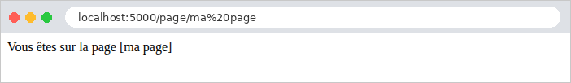

2. Actions, routage, réponses
Ce chapitre étudie le chemin d'une requête, du navigateur jusqu'à l'action qui la traite, et la réponse que renvoie cette action. Les vues n'apparaîtront qu'au chapitre 4 : ici, les actions renvoient directement du texte ou du JSON.
2.1. Exemple 01 : la structure d'une application Flask
Le premier exemple est la plus petite application [Flask] possible : un seul fichier.
2.1.1. Le fichier app.py
Commentons ce code :
- ligne 2 : l'importation de la classe [Flask] du paquet [flask], installé dans l'environnement virtuel par [pip]. En [Python], un fichier [.py] est un module, et un module n'utilise que les noms qu'il a importés ou définis lui-même (en dehors des fonctions intégrées au langage, comme [print] ou [len]) ;
- ligne 6 : l'application, un objet de la classe [Flask]. C'est elle qui reçoit les requêtes et choisit la fonction qui traite chacune. Le paramètre est le nom du module courant, que [Python] range dans la variable [__name__] : [Flask] s'en sert pour trouver le dossier de l'application, où il cherchera plus tard les vues (dossier [templates]) et les fichiers statiques (dossier [static]) ;
- ligne 10 : [@app.get("/")] est un décorateur. Un décorateur s'écrit [@expression], juste avant la définition d'une fonction (ou d'une classe) ; [Python] appelle l'expression avec la fonction en paramètre, au moment où il exécute la définition. Ici, [app.get("/")] enregistre la fonction [index] dans l'application : elle traitera les requêtes [GET /]. C'est le routage. Une fonction ainsi associée à une route est une action (la documentation de [Flask] dit une fonction de vue, cf. introduction) ;
- lignes 11-13 : l'action rend une chaîne de caractères. La valeur rendue par une action est la réponse envoyée au navigateur : [Flask] la place dans le corps de la réponse HTTP. Par convention, les noms de fonctions [Python] s'écrivent en minuscules, les mots séparés par des soulignés ([action01_post]) ;
- ligne 17 : quand on exécute le fichier lui-même ([python app.py]), [Python] donne à la variable [__name__] la valeur ["__main__"] ; quand le module est importé par un autre, elle vaut le nom du module (["app"]). Ce test, très courant en [Python], réserve donc la suite au lancement direct du fichier ;
- ligne 21 : [app.run] démarre le serveur de développement de [Werkzeug], qui attend les requêtes sur le port 5000 de la machine (5000 est d'ailleurs la valeur par défaut) jusqu'à ce qu'on l'arrête par [Ctrl-C]. [debug=True] active le mode debug : le serveur surveille les fichiers de l'application et la redémarre dès qu'on en modifie un ; une exception non traitée affiche une page de débogage (cf. exemple 03). Ce mode est fait pour le développement, et seulement pour lui : la page de débogage permet d'exécuter du code [Python] sur le serveur.
2.1.2. Exécution
Dans un terminal ouvert sur le dossier [01-structure], l'environnement virtuel des exemples étant activé, on tape [python app.py]. [Flask] affiche ses messages de démarrage :
Les messages indiquent le nom de l'application, le mode debug, l'adresse d'écoute et le port. [127.0.0.1] est l'adresse de la machine elle-même ([localhost]) : le serveur n'accepte que les requêtes venues de cette machine, ce qui convient au développement ([app.run(host="0.0.0.0")] l'ouvrirait aux autres machines du réseau). La ligne [Restarting with stat] signale le mécanisme du rechargement automatique : le processus lancé par [python app.py] ne fait que surveiller les fichiers ; il lance l'application dans un second processus, qu'il relance à chaque modification. Le « PIN » protège la console [Python] de la page de débogage.
Il existe une seconde façon de lancer une application, la commande [flask], installée avec [Flask] dans l'environnement virtuel :
L'option [--app] désigne le module de l'application ([app], c'est-à-dire le fichier [app.py]), [run] démarre le serveur de développement et [--debug] active le mode debug ; [--port 5001] changerait le port. La commande trouve elle-même, dans le module, l'objet [Flask] nommé [app] (ou, nous le verrons à l'exemple 02, une fonction [create_app]). Avec elle, le test [if __name__ == "__main__"] ne sert plus. Les exemples utilisent [python app.py], plus simple à retenir ; l'étude de cas fera de même.
Demandons l'URL [http://localhost:5000/] avec un navigateur :

puis avec [curl]. L'option [-i] affiche aussi les entêtes HTTP de la réponse :
La première ligne de la réponse est la version du protocole, le code de statut, 200, et son libellé, [OK]. Viennent ensuite les entêtes : le nom du serveur, la date, le type du contenu, sa longueur en octets, et [Connection: close] (le serveur de développement ferme la connexion après chaque réponse). Une ligne vide sépare les entêtes du corps de la réponse. Dans la suite du document, nous ne reproduirons plus les entêtes [Server], [Date] et [Connection], qui ne varient pas.
L'entête [Content-Type: text/html; charset=utf-8] indique que la réponse est du HTML, dont les caractères sont codés en UTF-8. C'est le choix de [Flask] pour toute chaîne rendue par une action : le navigateur interprète donc la chaîne comme du HTML (ici, sans balise, elle s'affiche telle quelle). L'exemple 03 montrera comment annoncer un autre type.
À chaque requête, la console du serveur affiche une ligne de journal : l'adresse du client, la date, la requête et le code de la réponse.
2.2. Exemple 02 : le routage
Le routage associe une URL et une méthode HTTP (GET, POST...) à une action. L'exemple 02 range ses actions dans deux fichiers :
Le dossier [controllers] est un paquet [Python] (cf. introduction). Chacun de ses deux modules définit un blueprint : un groupe de routes, que l'application enregistre ensuite. C'est l'équivalent [Flask] des classes contrôleurs de [Spring MVC] ou d'[ASP.NET Core MVC].
2.2.1. L'application : app.py
- lignes 4-5 : l'importation des deux blueprints, les objets [accueil] et [premier] des modules [controllers/accueil.py] et [controllers/premier.py] ;
- lignes 9-14 : l'application n'est plus une variable du module, créée dès l'importation : elle est construite par une fonction, appelée fabrique (*factory*). C'est la forme recommandée par la documentation de [Flask], que suivront tous les exemples suivants : la configuration de l'application est regroupée en un seul endroit, et l'on peut construire plusieurs applications différemment configurées (pour des tests, par exemple). La commande [flask --app app run] la connaît : faute de variable [app], elle appelle la fonction [create_app] du module ;
- lignes 12-13 : chaque blueprint est enregistré dans l'application : ses routes deviennent celles de l'application ;
- ligne 18 : on construit l'application, puis on lance le serveur.
2.2.2. Le blueprint accueil : controllers/accueil.py
- ligne 6 : le blueprint. Son premier paramètre est son nom, [accueil] : il servira à désigner ses actions ([accueil.index], cf. exemple 04). Le second, comme pour l'application, est le nom du module ;
- ligne 11 : un blueprint a les mêmes décorateurs que l'application : l'action [index] traite [GET /] ;
- lignes 13-23 : une chaîne entre trois guillemets peut s'étendre sur plusieurs lignes et contenir des guillemets. L'action rend du HTML, envoyé avec le type [text/html] (cf. exemple 01).
L'action [index] renvoie ainsi une page HTML qui contient des liens vers les actions de l'autre blueprint :

2.2.3. Le blueprint premier : controllers/premier.py
Commentons ce code :
- ligne 5 : le paramètre [url_prefix] fixe le préfixe commun à toutes les routes du blueprint : ses actions traitent des URL qui commencent par [/premier] ;
- lignes 9-10 : la route [""] désigne le préfixe lui-même : l'action [index] traite [GET /premier]. L'URL d'une action est la concaténation du préfixe du blueprint et du chemin de sa route. Le nom de l'action ([index]) peut être le même que dans un autre blueprint : [Flask] les distingue par le nom du blueprint ([premier.index], [accueil.index]) ;
- lignes 15-16 : l'action [action01] traite [GET /premier/action01] ;
- lignes 21-22 : le même chemin, mais pour la méthode POST : le décorateur [post] remplace [get]. Il existe aussi [put], [delete] et [patch], et le décorateur général [route], qui accepte la liste des méthodes : [@premier.route("/action01", methods=["GET", "POST"])]. Dans un même module, deux fonctions ne peuvent pas porter le même nom (la seconde remplacerait la première) : d'où le nom [action01_post] ;
- lignes 28-30 : [<int:id>] est une variable de chemin : ce segment de l'URL peut prendre plusieurs valeurs. [int] est un convertisseur : le segment doit être formé de chiffres, sinon la route ne correspond pas ; sa valeur est convertie en entier, puis passée au paramètre de même nom de l'action, [id]. Pour [/premier/produits/17], [id] vaut le nombre 17. C'est la liaison de données (*data binding*), que le chapitre suivant étudiera en détail. Sans convertisseur ([<id>]), la variable accepte n'importe quel texte sans barre oblique, et reste une chaîne. [Werkzeug] fournit aussi les convertisseurs [float], [uuid] et [path], et l'exemple 12 montrera comment écrire les siens ;
- ligne 30 : une f-chaîne (le préfixe [f]) : chaque expression entre accolades est évaluée, et sa valeur insérée dans le texte ;
- lignes 34-36 : deux variables de chemin, passées à deux paramètres de l'action ;
- lignes 41-43 : le convertisseur [path] accepte n'importe quelle fin d'URL, y compris des [/].
2.2.4. Exécution
Voici les réponses à quelques requêtes :
Le texte fait 26 caractères, mais la réponse 28 octets : en UTF-8, le caractère [°] occupe deux octets.
Pour envoyer une requête POST, on utilise l'option [-X POST] de [curl] :
Une méthode HTTP qu'aucune action ne traite pour ce chemin produit une erreur 405 ([Method Not Allowed]). L'entête [Allow] indique les méthodes acceptées ; [Flask] y ajoute [HEAD] (la même requête que GET, sans le corps de la réponse) et [OPTIONS] (la liste des méthodes acceptées), qu'il traite lui-même pour toute route GET :
Enfin, une URL qu'aucune route ne traite produit une erreur 404. C'est aussi le cas d'un identifiant qui n'est pas un nombre entier : aucune route ne correspond à [/premier/produits/abc].
Les réponses d'erreur de [Flask] (en fait, de [Werkzeug]) sont de courtes pages HTML, en anglais. Dans un navigateur :

Le chapitre 7 montrera comment les remplacer par des pages propres à l'application. Remarquons encore que [Flask] distingue [/premier] de [/premier/] : la seconde URL produit elle aussi une erreur 404, car aucune route ne se termine par une barre oblique. À l'inverse, une route déclarée avec une barre finale ([@premier.get("/liste/")]) accepte aussi l'URL sans barre, par une redirection.
La commande [flask routes], lancée dans le dossier de l'exemple, liste toutes les routes de l'application :
La colonne [Endpoint] donne le nom de chaque route : le nom du blueprint, un point, le nom de la fonction. La dernière route, [static], est créée par [Flask] lui-même : elle sert les fichiers du dossier [static] de l'application (cf. exemple 15).
2.3. Exemple 03 : les réponses d'une action
Ce que renvoie une action détermine la réponse HTTP. L'exemple 03 passe en revue les principaux cas. Le fichier [app.py] :
- lignes 11-12 : deux réglages du fournisseur JSON de l'application ([app.json]), l'objet qui convertit les objets [Python] en JSON. Par défaut, il écrit les caractères non ASCII sous forme d'échappements ([créée] devient [créée], ce qui est du JSON valide, mais peu lisible), et il trie les clés des dictionnaires par ordre alphabétique. Nous gardons les caractères tels quels, et les clés dans l'ordre où l'action les a écrites.
Le fichier [controllers/reponses.py] :
Commentons ce code :
- lignes 13-15 : la classe [Response] représente une réponse HTTP complète. L'action la construit elle-même : le corps, et le type ([mimetype]), ici [text/plain] (du texte brut). Le navigateur n'interprétera pas les balises ;
- lignes 19-21 : la même chaîne, rendue seule : [Flask] l'envoie avec le type [text/html], et le navigateur l'interprète ;
- lignes 25-29 : une dataclass : une classe dont on déclare seulement les champs et leurs types ; le décorateur [@dataclass] écrit lui-même le constructeur ([Personne("Martin", "Jean", 42)]), la représentation textuelle et la comparaison des objets. L'exemple 06 y reviendra ;
- lignes 33-35 : la fonction [jsonify] convertit son paramètre en JSON, et fabrique une réponse de type [application/json]. Le fournisseur JSON de [Flask] sait convertir les dictionnaires, les listes, les chaînes, les nombres, les booléens, [None] (qui devient [null]), mais aussi les dataclasses, les dates et les nombres [Decimal] (cf. exemple 06) ;
- lignes 39-41 : plus simple encore : une action qui rend un dictionnaire (ou une liste, lignes 45-47) produit une réponse JSON, sans appel à [jsonify]. Une dataclass, en revanche, doit passer par [jsonify] : rendue seule, elle provoquerait une erreur (« The view function did not return a valid response ») ;
- lignes 51-53 : une action peut rendre un tuple [(contenu, code)] : le code 201 ([Created]) remplace le code 200. Un tuple peut aussi contenir des entêtes : [(contenu, code, {"X-Exemple": "03"})] ;
- lignes 57-59 : le code 204 ([No Content]) signifie « rien à afficher » : la réponse n'a pas de corps ;
- lignes 64-68 : une action asynchrone, déclarée par [async def]. Le mot-clé [await] suspend la coroutine pendant l'attente ([asyncio.sleep]), sans bloquer le programme. [Flask] exécute l'action dans une boucle d'événements créée pour la requête, et attend son résultat : c'est utile pour lancer plusieurs attentes en parallèle (plusieurs appels à des services web, par exemple), mais cela ne rend pas [Flask] lui-même asynchrone. Il faut installer l'extra [[async]] de [Flask] (cf. [requirements.txt]) ;
- lignes 72-74 : une erreur « prévue » : le tuple [(contenu, 404)] produit une réponse 404 ([Not Found]), avec un corps JSON choisi par l'action ;
- lignes 78-80 : la même erreur, produite par la fonction [abort]. [abort] ne rend rien : elle lève une exception ([NotFound], pour le code 404), qui interrompt l'action ; [Flask] la transforme en réponse d'erreur, avec le message donné en second paramètre. C'est la façon la plus courante d'arrêter une action en erreur, même au fond d'une fonction appelée par l'action ;
- lignes 84-86 : une erreur « imprévue » : une exception que personne ne traite produit une réponse 500 ([Internal Server Error]).
Dans un navigateur, la différence entre [text/plain] et [text/html] est visible :


Voici les réponses des autres actions :
La dataclass a été convertie en objet JSON, un champ par attribut. En mode debug, le JSON est présenté sur plusieurs lignes, indenté ; sans le mode debug, il tient sur une seule ligne ([{"nom":"Martin","prenom":"Jean","age":42}]). L'action [/reponses/dictionnaire] produit exactement la même réponse.
La réponse de [abort] est la page d'erreur standard de [Werkzeug], avec notre message (son apostrophe a été échappée en ['] : un texte inséré dans du HTML ne doit pas pouvoir y introduire de balises, nous y reviendrons).
Reste l'exception imprévue. En mode debug, le navigateur affiche la page du débogueur de [Werkzeug] : le type et le message de l'exception, puis la pile d'appels (la liste des fonctions en cours d'exécution au moment de l'erreur), de la plus ancienne à la plus récente, avec pour chacune la ligne de code concernée :

La dernière fonction de la pile est notre action, [exception], à la ligne 86 du fichier [reponses.py]. En cliquant sur l'une des lignes de la pile, on peut même ouvrir une console [Python] dans le contexte de cette fonction, après avoir saisi le PIN affiché au démarrage : c'est pour cela que le mode debug ne doit jamais être activé sur un serveur accessible à d'autres. La console du serveur affiche elle aussi la pile d'appels (nous n'en reproduisons que la fin) :
Sans le mode debug ([app.run(port=5000)]), la même requête produit une courte page d'erreur 500, en anglais, qui ne révèle rien du code (« Internal Server Error. The server encountered an internal error and was unable to complete your request... ») ; la pile d'appels n'est écrite que dans la console du serveur. Le chapitre 7 montrera comment afficher une page d'erreur propre à l'application.
2.4. Exemple 04 : les redirections
Une redirection est une réponse qui demande au navigateur d'aller chercher une autre URL : un code 3xx, et l'entête [Location], qui contient la nouvelle adresse. Le navigateur envoie aussitôt une seconde requête, vers cette adresse. Le fichier [controllers/redirections.py] :
- lignes 8-10 : la fonction [redirect] fabrique une réponse de redirection vers l'adresse donnée. Le code 301 ([Moved Permanently]) signifie que la page a définitivement changé d'adresse : le navigateur (et les moteurs de recherche) peuvent retenir la nouvelle ;
- lignes 20-22 : sans paramètre [code], [redirect] produit une redirection temporaire, de code 302 ([Found]). L'adresse est calculée en recollant des morceaux de texte, ce qui pose un problème, que nous allons voir ;
- lignes 27-29 : la fonction [url_for] fabrique l'URL d'une action, désignée par son nom (["redirections.page"] : le blueprint, un point, la fonction), et non par son chemin. Ses paramètres nommés fournissent les variables du chemin (ici [nom]), correctement codées pour une URL. Si l'on change un jour le chemin de la route [page], les appels à [url_for] suivront d'eux-mêmes ;
- lignes 38-40 : une redirection vers un autre site.
Les réponses, avec [curl] (qui, sans option, ne suit pas les redirections) :
La réponse a aussi un petit corps HTML, pour un client qui ne suivrait pas les redirections. L'option [-L] de [curl] suit la redirection, comme le ferait un navigateur :
Comparons maintenant les deux redirections calculées, avec une destination qui contient un point d'interrogation, codé [%3F] dans l'URL (un [?] non codé commencerait les paramètres de l'URL) :
[Flask] a décodé la variable de chemin avant de la passer à l'action : [destination] vaut [a?b]. La première action la recolle telle quelle dans l'adresse : [/page/a?b], que le navigateur comprend comme le chemin [/page/a] suivi du paramètre [b]. La seconde passe par [url_for], qui la code à nouveau : [/page/a%3Fb]. En suivant les redirections :
Seule la seconde arrive sur la bonne page. D'où la règle : une adresse qui contient une valeur variable se fabrique avec [url_for], jamais en recollant des chaînes. Dans le navigateur, on ne voit que la page finale ; la barre d'adresse affiche la nouvelle URL :

Deux autres codes de redirection existent : 303 ([See Other]) et 307 ([Temporary Redirect]), que l'on obtient par [redirect(url, code=303)]. Après une requête POST, les codes 302 et 303 font envoyer par le navigateur une requête GET vers la nouvelle adresse, alors que 307 (et 308, la version permanente) lui font répéter la requête POST. L'exemple 20 utilisera la redirection après un POST.
2.5. Exemple 05 : les objets requête et réponse
Jusqu'ici, les actions ne recevaient que des variables de chemin, et rendaient une valeur que [Flask] transformait en réponse. Une action peut aussi consulter la requête en cours, et construire elle-même la réponse. Le fichier [controllers/http.py] :
- ligne 4 : l'importation de l'objet [request]. En [Flask], la requête en cours n'est pas un paramètre de l'action : c'est un objet global, [request], que l'on importe du paquet [flask]. Comment un objet global peut-il désigner la requête en cours, alors que le serveur en traite plusieurs à la fois, sur plusieurs threads (des fils d'exécution parallèles) ? [request] est un mandataire (*proxy*) : chaque fois qu'on l'utilise, il transmet l'opération à la requête du thread courant. [Flask] appelle cela le contexte de requête : pendant qu'une requête est traitée, [request] désigne cette requête-là. En dehors du traitement d'une requête, l'utiliser provoque une erreur (« Working outside of request context ») ;
- lignes 14-20 : quelques propriétés de la requête : sa méthode HTTP, son chemin, ses paramètres bruts (la partie de l'URL qui suit le [?], sous forme d'octets, que [decode] transforme en texte), ses entêtes ([request.headers], un dictionnaire, dont la méthode [get] rend [None] pour un entête absent), l'adresse IP du client. Les paramètres, un par un, seront l'objet du chapitre suivant ;
- lignes 26-30 : la fonction [make_response] construit l'objet réponse (un [Response]) à partir de ce que rendrait l'action (ici une chaîne) ; l'action peut alors le modifier avant de le rendre. On lui ajoute un entête [X-Exemple] (par convention, les entêtes propres à une application commencent souvent par [X-]) ;
- lignes 34-37 : la réponse construite « à la main » : le corps, le code de statut et le type ;
- lignes 42-50 : une réponse envoyée par morceaux (*streaming*). La fonction [morceaux] est un générateur : chaque [yield] produit un morceau du corps. Construite sur un générateur, la réponse ne connaît pas sa longueur à l'avance : le serveur envoie le code et les entêtes, puis chaque morceau dès qu'il est produit. C'est utile pour une réponse très longue, produite petit à petit. Mais une fois le premier morceau parti, le code de statut ne peut plus changer : ici, le générateur lève une exception après le premier morceau. C'est l'erreur à ne pas commettre : une réponse commencée ne peut plus devenir une réponse d'erreur.
Les réponses :
(les guillemets autour de l'URL empêchent le terminal d'interpréter le caractère [&]). Dans un navigateur, l'entête [User-Agent] est celui du navigateur ; [Chrome] présente le JSON brut, avec une case à cocher qui l'indente :

L'entête [Transfer-Encoding: chunked] remplace [Content-Length] : le corps arrive par morceaux, chacun précédé de sa longueur. Au bout d'une seconde, la réponse s'arrête : [curl] a reçu un code 200 et un corps tronqué, sans aucun moyen de savoir qu'une erreur s'est produite. Seule la console du serveur l'indique :
2.6. Exemple 06 : services partagés et injection de dépendances
Une action ne devrait pas contenir elle-même la logique de l'application : elle la délègue à des services, des objets qui savent faire une chose (lire des produits, calculer un panier...). Plusieurs actions utilisent souvent le même service. Dans [Spring] ou [ASP.NET Core], un conteneur d'injection de dépendances crée les services et les fournit automatiquement à ceux qui en ont besoin. [Flask] n'a pas de conteneur : c'est la fabrique de l'application qui crée les services, et les actions les demandent à l'application. L'exemple 06 organise son code par domaine (les produits, les clients), plutôt que par nature (contrôleurs, modèles) :
2.6.1. Le produit
- ligne 8 : une dataclass (cf. exemple 03). Avec [frozen=True], l'objet est immuable : ses champs sont fixés par le constructeur, et toute tentative de modification ([p.prix = 2]) lève une exception. Un objet immuable peut être partagé sans risque entre plusieurs requêtes ;
- lignes 10-12 : les champs, avec leur type. Les types ne sont pas vérifiés par [Python] à l'exécution : ce sont des annotations, que lisent les outils d'analyse (celui de [Visual Studio Code]), et certaines bibliothèques ([Pydantic], au chapitre suivant). Le prix est un [Decimal], un nombre décimal exact : un [float] ne sait pas représenter exactement 0,1 ou 3,2 (en binaire, ces nombres ont une infinité de chiffres), et une somme de prix en [float] peut donner 5,500000000000001.
2.6.2. Le contrat du service : service.py
- lignes 11-18 : le contrat du service : ce qu'il sait faire, sans dire comment. En [Python], un contrat s'écrit par une classe abstraite : une classe qui hérite de [ABC] ([Abstract Base Class]), et dont les méthodes marquées [@abstractmethod] n'ont pas de corps (les trois points [...] tiennent lieu de corps vide). On ne peut pas créer d'objet de cette classe ; une classe fille doit redéfinir toutes ses méthodes abstraites. C'est l'équivalent des interfaces de [Java] et [C#] ;
- ligne 14 : l'annotation du type rendu par la méthode (après [->]) : une liste de produits. [self] est l'objet sur lequel la méthode est appelée (l'équivalent de [this] en [Java]), toujours écrit en premier paramètre ;
- ligne 18 : [Produit | None] : un produit, ou [None] s'il n'existe pas ;
- lignes 23-24 : la fonction qui fournit le service aux actions. [current_app] est, comme [request], un mandataire : il désigne l'application qui traite la requête en cours. [app.extensions] est un dictionnaire que [Flask] met à la disposition des extensions (les bibliothèques qui s'ajoutent à [Flask]) pour y ranger leurs objets ; nous l'utilisons pour nos propres services. La fonction indique aussi le type du service ([-> ProduitsService]) : [Visual Studio Code] peut alors proposer ses méthodes.
2.6.3. L'implémentation : service_memoire.py
- ligne 8 : la classe hérite du contrat, et redéfinit ses deux méthodes ;
- lignes 10-15 : [__init__] est le constructeur de la classe. Il range les produits dans l'attribut [_produits] de l'objet ; le souligné initial signale, par convention, un attribut privé, que le code extérieur à la classe ne devrait pas utiliser. Les produits sont dans un tuple (des parenthèses) : une séquence non modifiable. Le prix est construit à partir d'une chaîne ([Decimal("1.5")]) : construit à partir du [float] 1.5, il hériterait de ses imprécisions ;
- lignes 18-19 : la méthode rend une nouvelle liste, copie du tuple : l'appelant peut la modifier sans toucher aux données du service ;
- lignes 21-23 : [(p for p in self._produits if p.id == id)] est une expression génératrice : elle produit, un par un, les produits dont l'id est celui demandé. [next] rend le premier élément produit, ou la valeur par défaut, [None], s'il n'y en a aucun.
2.6.4. Le blueprint des produits : controller.py
- ligne 4 : le blueprint ne connaît que le contrat du service (le module [service]), pas son implémentation : il ignore que les produits sont en mémoire ;
- lignes 10-12 : l'action demande le service à l'application, puis lui délègue le travail. [jsonify] convertit la liste de dataclasses en tableau JSON ;
- lignes 16-20 : un produit inconnu produit une réponse 404, avec un message en JSON.
2.6.5. Le blueprint des clients : controller.py
- lignes 14-17 : le contenu du panier, rendu en JSON ;
- ligne 22 : ce blueprint utilise le même service que celui des produits : un seul objet, partagé ;
- ligne 24 : [sum] additionne les éléments d'un itérable ; son paramètre [start] est la valeur de départ de la somme (0 par défaut). Partir de [Decimal(0)] plutôt que de l'entier 0 n'est pas indispensable (un entier et un [Decimal] s'additionnent), mais garantit un résultat [Decimal] même pour un panier vide.
2.6.6. La déclaration du service : app.py
- ligne 17 : c'est ici, et ici seulement, que l'on choisit l'implémentation du service. Le service est créé une fois, au démarrage, et le même objet sert toutes les requêtes de tous les utilisateurs : c'est un singleton (la portée par défaut des beans de [Spring]). Pour passer à une implémentation qui lit une base de données, il suffirait de changer cette ligne : les blueprints, qui ne connaissent que le contrat, ne changeraient pas. C'est tout l'intérêt de l'injection de dépendances, même écrite « à la main » : chaque partie de l'application dépend de contrats, et un seul endroit décide des implémentations.
Un service partagé par toutes les requêtes doit supporter d'être utilisé en même temps par plusieurs d'entre elles : le serveur de développement traite chaque requête sur son propre thread. Celui-ci ne pose aucun problème : il ne fait que lire des données qui ne changent jamais. L'exemple 20 montrera un service dont les données changent, et la précaution qu'il impose.
2.6.7. Exécution
Les prix sont devenus des chaînes (["1.5"]) : JSON n'a qu'un type de nombre, que la plupart des programmes lisent comme un nombre à virgule flottante ; le fournisseur JSON de [Flask] convertit donc un [Decimal] en chaîne, pour ne rien perdre de sa précision.